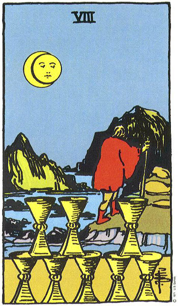

Tauro
El Ocho de Copas representa la búsqueda de un sentido más profundo de la vida. ¿Adónde nos lleva nuestra vida? ¿Vas por el camino adecuado?
Estas decepcionado con la situación, con los amigos, con la pareja, con la vida. Sientes que algo te falta y no tiene solución. Pero tienes que hacer todo lo contrario. Debes pararte de frente y enfrentar el problema. Estos no se solucionarán mientras sigas ignorándolos.
Es hora de tener conversaciones para decir lo que sientes. Es hora de hacer llamadas y enviar mensajes para decir verdades. Expresarte es el primer paso para cambiar lo que no funciona en la vida. Este es un periodo de reflexión, comprensión, meditación, profundidad y búsqueda.
Escucha a tu pareja. Si no tienes pareja es un buen momento para encontrar amor en el trabajo o en el colegio.
Este mes especialmente cuida tu dinero. No prestes. Aléjate de las apuestas.
Volver al inicio
Programar una lectura profesional